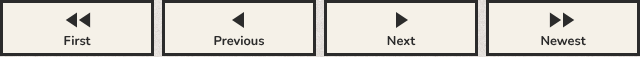
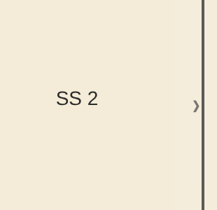
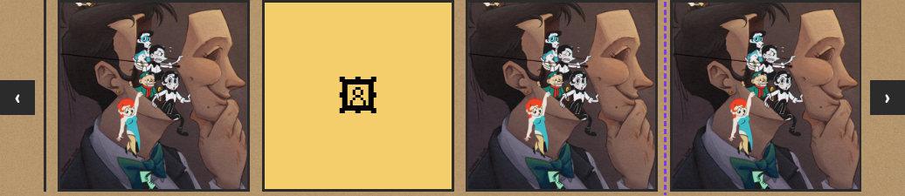
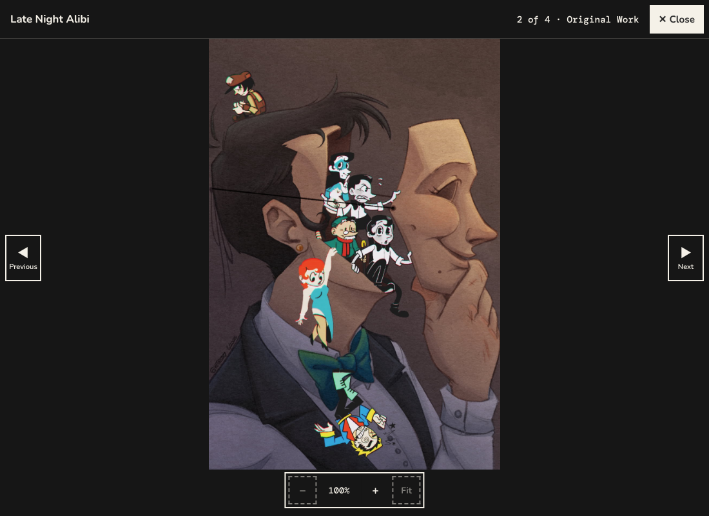

One solid triangle with rounded corners, like the rounded ends of Nunito's letters. Every arrow on the site is drawn from it: one pointing right for next, left for previous, two for first and newest, and down or up for a fold-out.
The same four controls, in the same places, with the same captions and full names. They gain the hard shadow, yellow on hover, and the soft triangles.
Today

After, on a laptop: on the newest page, with the pointer over Previous
After, on a 390 px phone: on page 1 of the series
The quiet strip at each edge of the page stays, and still turns the page when clicked anywhere. Both show the same test page. In place of the faint ‹ character, the arrow button shows in its middle, yellow, while the pointer is over the strip.
Today

After
The black squares with ‹ and › become the same arrow buttons, on the section's kraft band. The right one shows the pointer over it.
Today

After
The same button, turned around for the dark view: near-black with a beige border, arrow and caption, and a pale shadow. On the first piece, Previous can't be used. The emoji-prone ◀ ▶ characters go. Both are a 1100 by 800 screen shown at half size; the bars and Close are unchanged.
Today

After
Previous and Next in the bottom bar, either side of the zoom controls, in the dark style. Left: at rest. Right: Next pressed (it sinks onto its shadow and turns yellow).
One set of rules for every arrow button, on paper and on dark.
Where an arrow sits beside words (a link or a button), the typed ← → become the small triangle, about three quarters of the letters' height, in the text's colour. The chapter list's ▾ becomes the triangle pointing down.
Today
After
A 320 px phone with text at 200%: the controls wrap two by two, as today. The arrows keep their size; the captions grow.
A 320 px phone with text at 200%, on the Fan Art band (the darkest). The arrows stay 44 px; the right one has keyboard focus (the purple ring, 3.8:1 on the band).
A 320 px phone held upright with text at 200%. The buttons grow to fit "Previous" and "Next"; the zoom controls move to their own row above them.